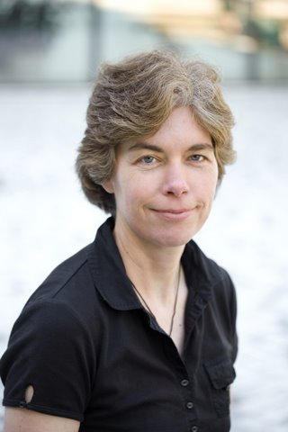

1st International Workshop on
Context in Software Development
November 21, 2014
1st International Workshop on
November 21, 2014
 Kelly Blincoe ( @KellyBlincoe) received a BE in Computer Engineering from Villanova University in 2004, an MS in Information Science from Pennsylvania State University in 2008, an MS in Computer Science from Drexel University in 2011, and a Ph.D in Computer Science from Drexel University in 2014. She is currently a Postdoctoral Fellow at the University of Victoria. She previously worked at Lockheed Martin as a Proposal Manager and Software Engineer. Her research interests lie in collaborative software engineering and computer-supported cooperative work.
Kelly Blincoe ( @KellyBlincoe) received a BE in Computer Engineering from Villanova University in 2004, an MS in Information Science from Pennsylvania State University in 2008, an MS in Computer Science from Drexel University in 2011, and a Ph.D in Computer Science from Drexel University in 2014. She is currently a Postdoctoral Fellow at the University of Victoria. She previously worked at Lockheed Martin as a Proposal Manager and Software Engineer. Her research interests lie in collaborative software engineering and computer-supported cooperative work.
 Daniela Damian (@DanaHDamian) is an Associate Professor in University of Victoria’s Department of Computer Science, where she leads research in the Software Engineering Global interAction Laboratory (SEGAL). Her research interests include Software Engineering, Requirements Engineering, Computer-Supported Cooperative Work and Empirical Software Engineering. Her recent work has studied the interplay of the social and technical aspects of developers’ coordination in large, geographically distributed software projects. Daniela has served on the program committee boards of several software engineering conferences, and was (co-)organizer on many workshops at ICSE, FSE and RE conferences. The Global Software Engineering Workshop she organized at ICSE in early 2000 was very successful and became the current International Conference on Global Software engineering (ICGSE) – of which first edition in 2006 she served as the program co-chair. She is currently serving on the editorial boards of the Journals of Transactions on Software Engineering, Requirements Engineering, Empirical Software Engineering, and Software and Systems.
Daniela Damian (@DanaHDamian) is an Associate Professor in University of Victoria’s Department of Computer Science, where she leads research in the Software Engineering Global interAction Laboratory (SEGAL). Her research interests include Software Engineering, Requirements Engineering, Computer-Supported Cooperative Work and Empirical Software Engineering. Her recent work has studied the interplay of the social and technical aspects of developers’ coordination in large, geographically distributed software projects. Daniela has served on the program committee boards of several software engineering conferences, and was (co-)organizer on many workshops at ICSE, FSE and RE conferences. The Global Software Engineering Workshop she organized at ICSE in early 2000 was very successful and became the current International Conference on Global Software engineering (ICGSE) – of which first edition in 2006 she served as the program co-chair. She is currently serving on the editorial boards of the Journals of Transactions on Software Engineering, Requirements Engineering, Empirical Software Engineering, and Software and Systems.
 Giuseppe Valetto received a Laurea degree in Electronic Engineering from Politecnico di Torino, Turin, Italy in 1992, an MS in Computer Science from Columbia University, New York, NY, USA in 1994, and a Ph.D. in Computer Science, again from Columbia University, in 2004. In his career as a researcher, he has mostly worked on collaborative software engineering and distributed and self-adaptive systems. He has held positions as Xerox Research in Grenoble, France, CEFRIEL- Politecnico di Milano, Milan, Italy, Telecom Italia Lab, Turin, Italy, IBM T.J. Watson Research Center, Hawthorne, NY, USA, Drexel University, Philadelphia, PA, USA. He is currently a researcher in the Service Oriented Applications unit at Fondazione Bruno Kessler, Trento, Italy. He was the general chair of the IEEE Self- Adaptive and Self-Organizing Systems (SASO) Conference in 2013.
Giuseppe Valetto received a Laurea degree in Electronic Engineering from Politecnico di Torino, Turin, Italy in 1992, an MS in Computer Science from Columbia University, New York, NY, USA in 1994, and a Ph.D. in Computer Science, again from Columbia University, in 2004. In his career as a researcher, he has mostly worked on collaborative software engineering and distributed and self-adaptive systems. He has held positions as Xerox Research in Grenoble, France, CEFRIEL- Politecnico di Milano, Milan, Italy, Telecom Italia Lab, Turin, Italy, IBM T.J. Watson Research Center, Hawthorne, NY, USA, Drexel University, Philadelphia, PA, USA. He is currently a researcher in the Service Oriented Applications unit at Fondazione Bruno Kessler, Trento, Italy. He was the general chair of the IEEE Self- Adaptive and Self-Organizing Systems (SASO) Conference in 2013.
 Gail C. Murphy (@gail_murphy) is a Professor in the Department of Computer Science and Associate Dean (Research and Graduate Studies) in the Faculty of Science at the University of British Columbia. She is also a co-founder and currently Chief Scientist at Tasktop Technologies. Her research interests are in improving the productivity of knowledge workers, especially software developers. She has been a co-organizer of workshops at ICSE and OOPSLA. She has served as a Program Chair for FSE 2008, a Co-Program Chair for ICSE 2012, General Chair of AOSD 2004 and a co-local organizer of ICSE 2013.